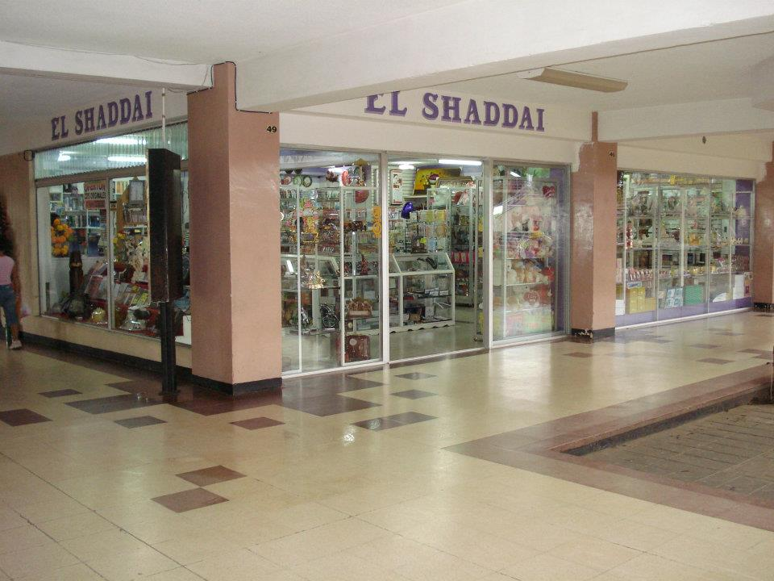
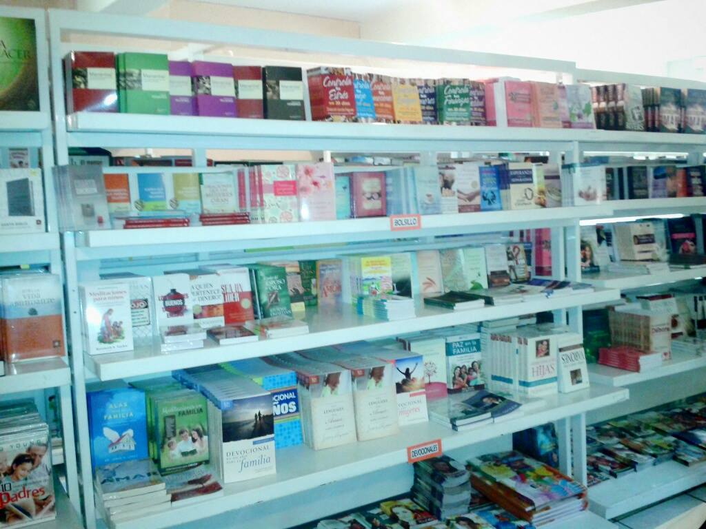
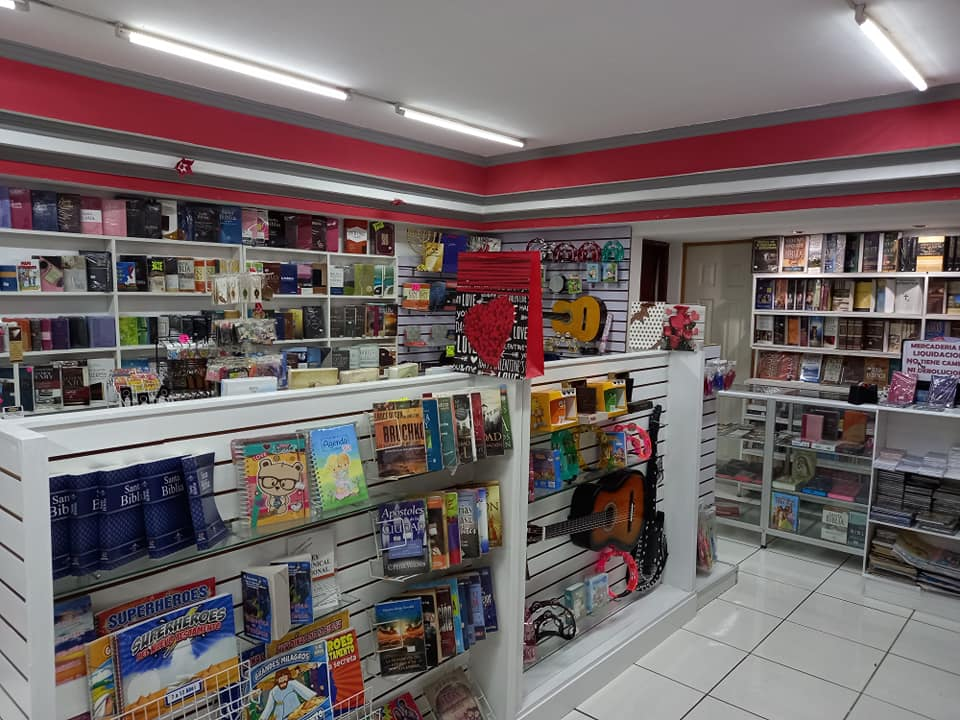
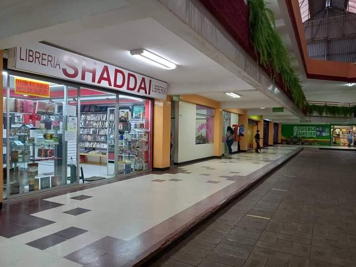
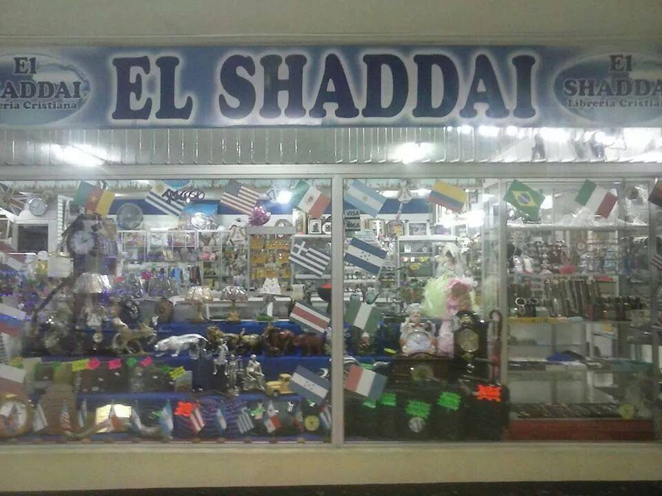
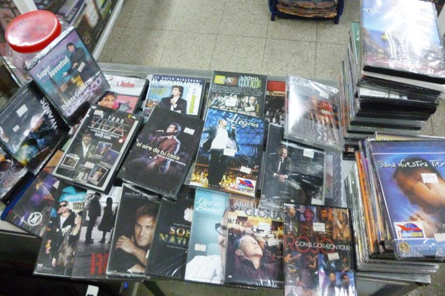
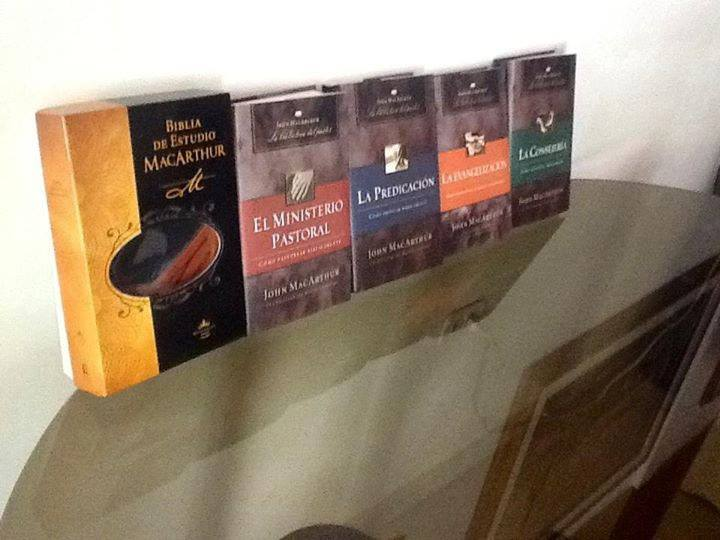
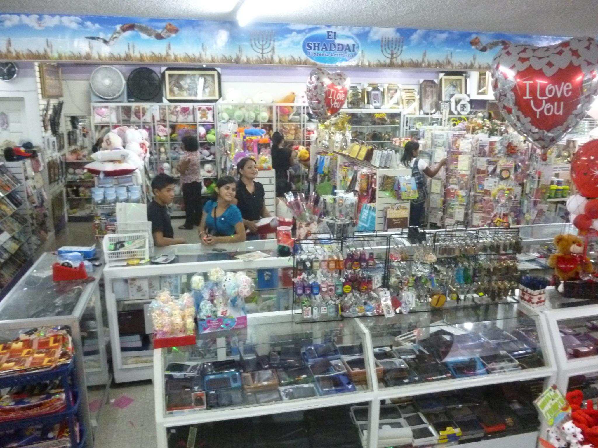

Así comenzó nuestra historia
La Librería Cristiana El Shaddai nació en el año 1997, con el propósito de satisfacer la necesidad que existía en la ciudad de contar con un lugar dedicado a la venta de literatura cristiana, Biblias y materiales para el crecimiento espiritual.
Desde sus primeros pasos, la visión fue clara: ofrecer a la comunidad un espacio donde pudieran encontrar recursos de fe, enseñanza y edificación para la vida diaria.


Una librería con misión
Desde sus inicios, la librería ha buscado servir a la comunidad ofreciendo recursos que ayudan al aprendizaje, la enseñanza de la Palabra de Dios y el fortalecimiento de los valores cristianos.
Más que vender libros, nuestro deseo ha sido brindar herramientas que inspiren, orienten y acompañen a cada persona en su crecimiento espiritual.
Creciendo junto a nuestros clientes
Con el paso de los años, Librería Cristiana El Shaddai ha ido creciendo y ampliando su catálogo para ofrecer una mayor variedad de productos a sus clientes.
Hoy en día, contamos con Biblias, devocionales, libros de teología, material infantil, música cristiana y otros artículos pensados para bendecir a las familias, iglesias y ministerios.

Seguimos sirviendo con el mismo compromiso
Actualmente, la Librería Cristiana El Shaddai se encuentra ubicada en el Centro Comercial Internacional, en Coatepeque, Quetzaltenango, donde continúa atendiendo a sus clientes con el mismo compromiso, dedicación y espíritu de servicio con el que inició.
Nuestro objetivo sigue siendo ofrecer atención cercana, productos de calidad y un espacio donde cada persona pueda encontrar lo que necesita para fortalecer su fe.
Un paso más hacia lo digital
Hoy, con la creación de nuestro catálogo en línea, buscamos facilitar a nuestros clientes el acceso a nuestros productos, permitiéndoles conocer los libros disponibles y encontrar con mayor facilidad el material que necesitan.
Este proyecto representa una nueva etapa para la librería: seguir creciendo, adaptándonos a los tiempos actuales y manteniendo siempre nuestra esencia de servicio.

Momentos que forman parte de nuestra historia




Gracias por ser parte de nuestra historia
Seguimos trabajando para servirte mejor y acercarte a recursos que fortalezcan tu fe, tu familia y tu crecimiento espiritual.
← Volver al catálogo